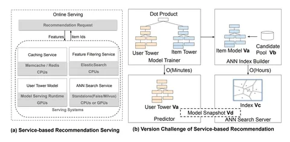

Сегодня разбираем статью от Meta* на тему кандидатогенерации на основе GPU. Авторы рассказывают, как именно уносят кандидатогенераторы на GPU и какой профит получают.
Индустриальные рекомендательные системы скейлятся на десятки и сотни миллионов айтемов, поэтому приходится строить каскад, где на ранней стадии кандидатов достают из ANN-индекса и дополнительно фильтруют по разным бизнес-правилам.
В работе утверждают, что типичный пайплайн «ANN на CPU + фильтрующий сервис + сетевые вызовы между компонентами» дорогой и неэффективный. Сюда прибавляется проблема неконсистентности: юзерная часть двубашенной модели обновляется часто, а документная — редко, потому что перестроение индекса стоит дорого. Это приводит к миссматчу версий и создаёт целых 30% дропа перформанса.
В SilverTorch объединяют индексацию и фильтрацию на одной видеокарте и реализуют всё как один PyTorch-граф без пересылок между отдельными сервисами. Для фильтрации вместо обратного индекса используют Bloom-index: строят битовые маски по атрибутам (язык, регион и прочее), транспонируют представление так, чтобы обрабатывать куски по 64 документа за инструкцию и избегать рандомных обращений к памяти. Фильтрацию делают сразу во время ANN-поиска, чтобы топ на выходе ANN-индекса содержал строго айтемы, соответствующие всем бизнес-правилам. Bloom-маску строят только по айтемам из выбранных кластеров — это, по оценке авторов, в 30 раз сократило стоимость стадии фильтрации фичей.
Сам ANN-поиск реализован как KNN с кластеризацией (сначала топ центроидов, потом дот-продакты внутри кластеров). Эмбеддинги квантуют в Int8, что в два раза сокращает потребление памяти и сильно поднимает пропускную способность.
Высвободившийся бюджет тратят на OverArch scoring layer — нейросеть, которая усложняет функцию матчинга поверх дот-продакта и даёт более высокий recall. Отдельно говорят, что такой дизайн упрощает мультитаск-ретривал: не нужно строить несколько индексов, так как все таски считаются в одной копии индекса, а потом комбинируются value-моделью.
По результатам на двух industry-scale-датасетах (10 млн и 80 млн айтемов) авторы получили снижение latency более чем в 5 раз, рост пропускной способности в 23 раза и сокращение костов на сёрвинг в 13 раз. Систему уже внедрили в сотни моделей в продуктах Meta, и она сёрвит миллиарды пользователей.
@RecSysChannel
Разбор подготовил
___
Компания Meta признана экстремистской; её деятельность в России запрещена.
